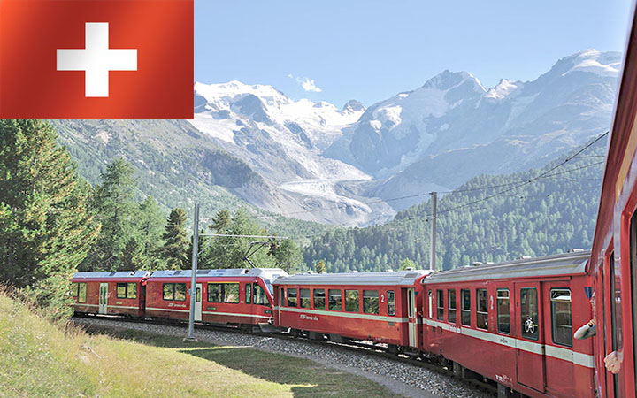
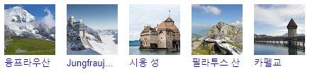

관광명소 :

언어: 독일어,프랑스어,이탈리아어,로망슈어
기: 산간지대임에도 서안 해양성 기후(Cfb)를 띠며, 연평균 8~10℃로 사계절이 있고 계절별 기온 차가 적어 비교적 온난하다. 다만 체르마트(Zermatt), 다보스(Davos)처럼 고도가 매우 높은 곳은 온대고산기후(Dfb~Dfc)를 띠기도 한다.
국호: 덴마크 왕국(Kongeriget Danmark)
면적: 덴마크 본토 43,094㎢ 덴마크 왕국[1] 2,220,093 km²[2]
인구: 5,748,311명 (2018년)
수도: 베른
정치체제: 공화제 연방제
화폐단위: 스위스 프랑
환율: 1000KRW = 약 0.84CHF